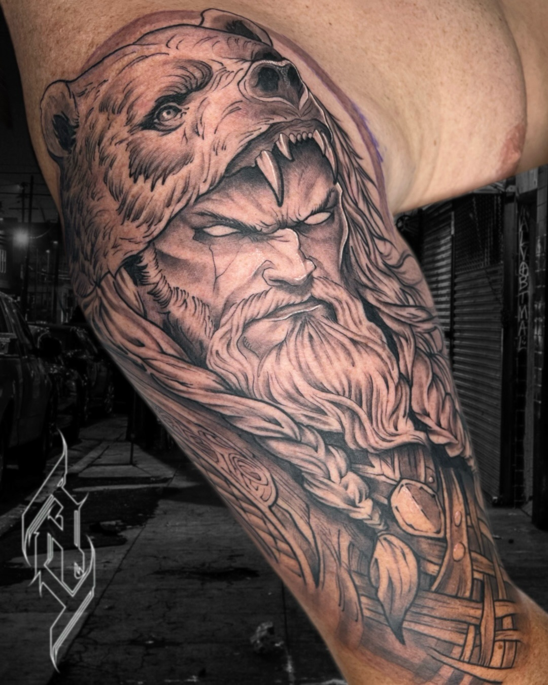
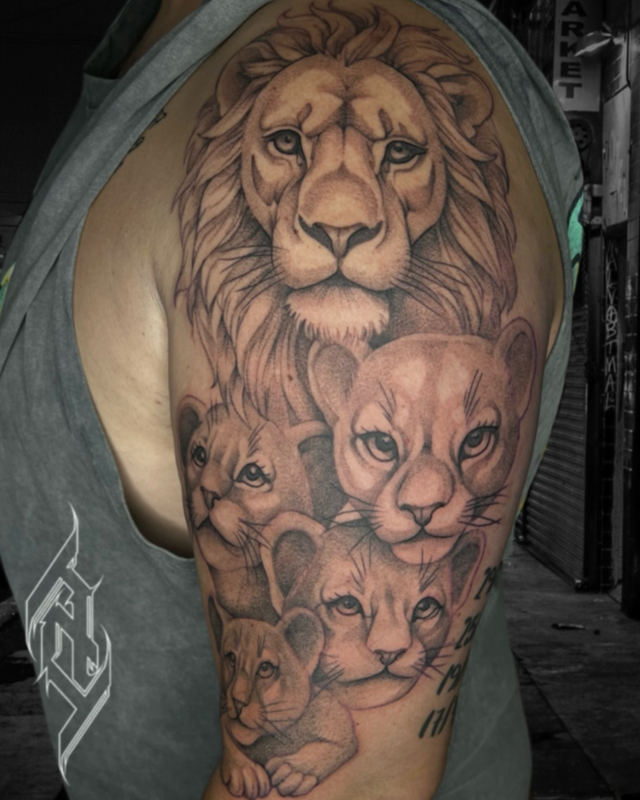
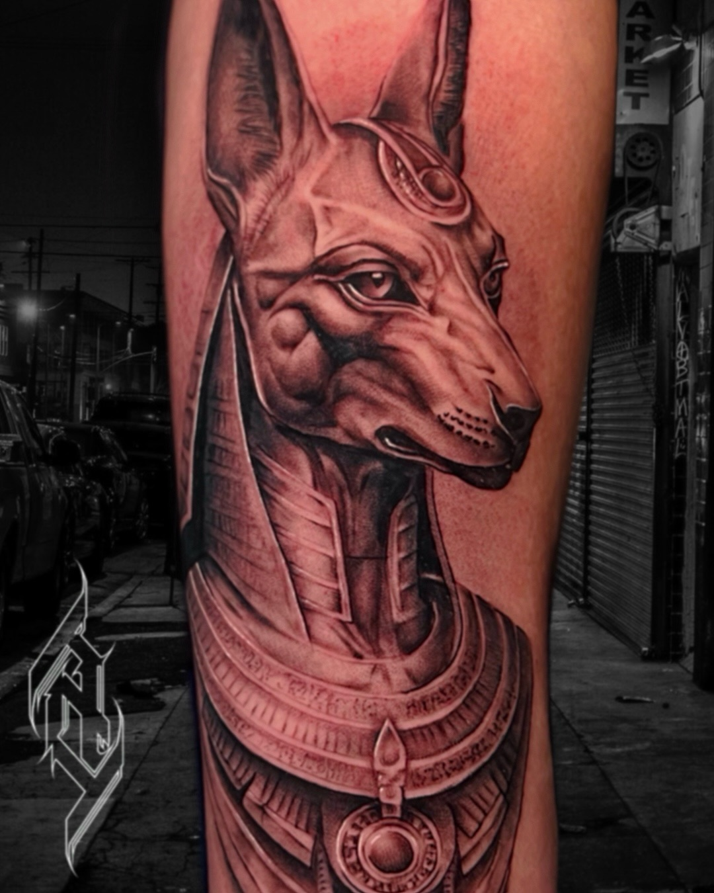
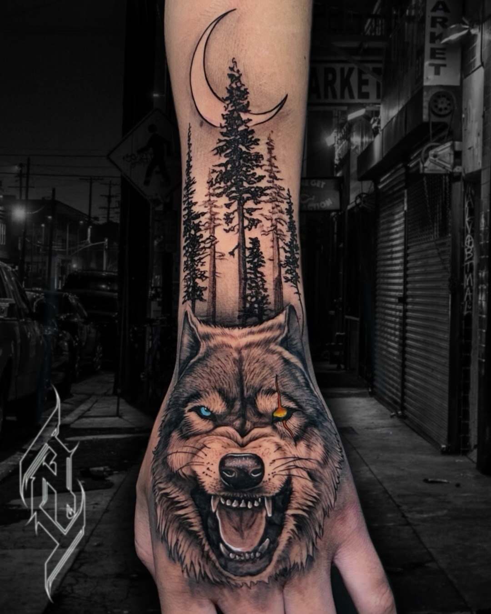
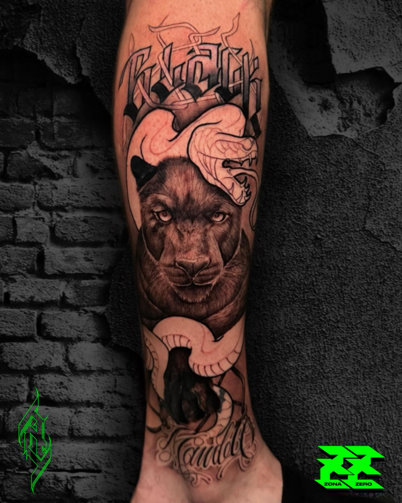
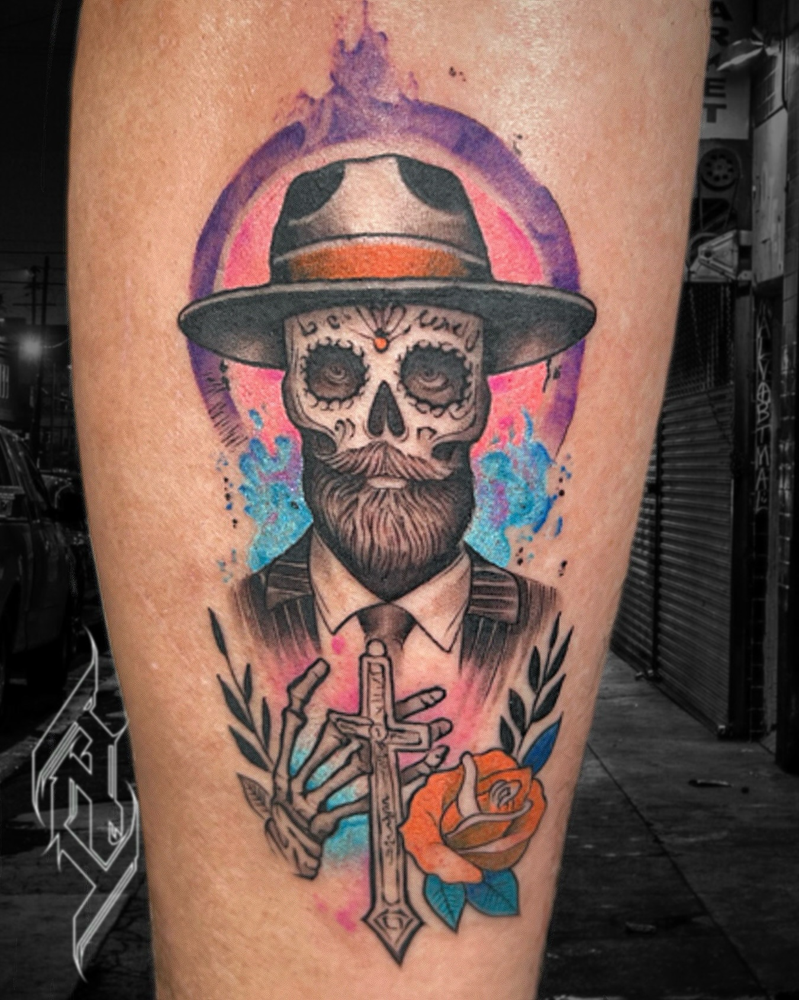

Propietario · Tatuador
Adrián
Realismo ilustrativo con una presencia gráfica muy marcada. Sus piezas combinan volumen, línea y contraste, especialmente en composiciones de fauna y mitología.

EstiloRealismo ilustrativo
PaletaBlack & Grey · Color
MotivosFauna · Mitología
Selección confirmada
Fuerza, volumen y narrativa.
Animales, figuras mitológicas y símbolos construidos con sombras profundas, línea visible y acentos de color cuando la composición lo pide.






@adrian.zzero